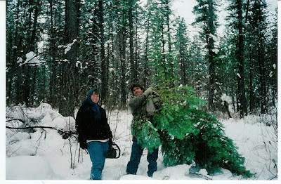

“I’m trying not to hate, but rather to enjoy the beauty we
can see in life,” observes Scott Molen. That worthy sentiment is all the more
remarkable coming from someone whose life has been permanently disfigured by
the State’s proprietary brand of ugliness.
In June
2007, Scott was convicted in Ada County, Idaho of “lewd and lascivious
conduct” with his step-granddaughter and sentenced to 20 years in prison. The
case presented against Scott consisted of the uncorroborated,
self-contradictory testimony of the young accuser. The prosecution quite
thoughtfully kept their presentation otherwise uncluttered by evidence.
During voir dire, assistant
prosecutor Josh Taylor explained to the
jury that “you’ll hear testimony from a small child. There won’t be any DNA
evidence or other types of evidence of that sort.” So zealous was the
prosecution to avoid confusing the jury that they suppressed – until half-way
through the trial -- the results of a detailed medical examination that found
no physical symptoms of sexual assault.
While austere in providing proof, the prosecution was very
generous in defining the offense for which Scott was on trial. He was formally
charged with sexual assault – in essence, the rape of a child – but the lead
prosecutor, assistant Attorney General Justin D. Whatcott, was permitted by the
trial judge to redefine the offense as “lewd and lascivious conduct,” which had
a much lower threshold: Rather than physically violating the child, the
defendant was accused of improperly “touching” her. This approach allowed the
prosecution the luxury of barraging the jury with lurid claims it was not
required to prove.
The prosecution was well aware of the fact that it was riding
a very weak case.
Theresa Gardunia, the original prosecutor in the case, “told
me I could plead guilty to one count of injury to a child, with one year in
jail,” Scott recalled to me. “I was also promised that I wouldn’t be a
registered sex offender. But I didn’t do what they accused me of doing. I would
never do such a thing to a child. I had made a lot of mistakes, and I had been
in trouble with the law. I didn’t try to hide it. But I was not going to volunteer to serve time for
something I would never do.”
Most people convicted of crimes maintain their innocence. Few,
however, can cite concurring testimony provided by the foreman of the jury that
convicted them.
"When you boil the whole thing down and look at
it," jury foreman Ken McKay admitted to a private investigator roughly a
year after Scott was sent to prison, "there wasn't a single shred of
evidence." Four members of the jury, McKay recalled, were “dug in” on
behalf of Scott’s innocence. Several others “had decided that he was guilty
pretty early on and there was really no reasoning with them about that.”
An engineer by training – his professional credo was “In God
we trust, everybody else bring your data,” the jury foreman told the
investigator – McKay maintained that he had been skeptical about “fantastic
charges” made by the prosecution. For instance, the jury was told that “there
was a pair of [girl's] undergarments that had a blood stain in them.” His misgivings
grew when that critical piece of evidence, although being prominently referred
to in the prosecution’s case, was “never produced.”
This was not an oversight, nor the product of mere incompetence.
It was a “Brady violation” – deliberate prosecutorial misconduct intended to
conceal exculpatory evidence. This much-discussed but never-seen piece of
evidence was supposedly discovered at a time when the alleged victim was living
with her mother and an abusive boyfriend in Phoenix, roughly 1,000 miles away
from Scott. Furthermore, the mother claimed to have found it several months before she sent the girl back
to visit the alleged molester a second time.

Scott and Connie hosted the child during the summer of 2004
and 2005. They had become concerned about the dissolute and addictive behavior
of the young girl’s mother, who shared her apartment with a succession of
live-in boyfriends. In the interest of providing the girl with a stable,
healthy environment, the grandparents expressed interest in adopting her.
Shortly thereafter, the girl told some friends that her
grandfather – Scott – had “kissed” her. This was described as “disclosure” of
sexual abuse.
She was interrogated in a tape-recorded interview by Boise
Police Officer Tammy Kennedy, who claimed that the girl recounted “multiple”
assaults – including a dozen instances of “full intercourse.”
The tape recording made by Officer Kennedy was “lost.” She
subsequently filed a detailed official report replete with vulgar descriptions
of sexual acts that are not likely to have been offered by an eight-year-old
girl. However, that report was not filed until after the child had been interviewed by Alisa Ortega, a
nurse employed by the Child
At Risk Evaluation Services (CARES) of St. Luke's Hospital in Boise. A second CARES nurse conducted an extensive, videotaped interrogation of the child.
As is frequently the case, that interview was not an
examination, but rather an act of ventriloquism.
“There was a point ... [when] the CARES interviewer made a
pretty critical mistake" in questioning the alleged victim, McKay pointed
out. To be specific, the interviewer "actually put her words, used
her own words to describe what the young woman was saying and from that point
forward in the interview [the alleged victim] used the interviewer's
words."
What this means is that there was no accuser: The investigator was telling a story, using the supposed victim as a prop. Testifying on behalf of Scott, forensic psychologist Philip Esplin criticized the CARES investigator for numerous violations of long-established interview protocols in child abuse cases. This was obvious, or should have been, to reasonably intelligent observers without specialized training.
What this means is that there was no accuser: The investigator was telling a story, using the supposed victim as a prop. Testifying on behalf of Scott, forensic psychologist Philip Esplin criticized the CARES investigator for numerous violations of long-established interview protocols in child abuse cases. This was obvious, or should have been, to reasonably intelligent observers without specialized training.
“I remember watching [the recorded interview] and thinking,
wow that's really, that's really incorrect," McKay told the detective.

The timeline provided by prosecutors Justin D. Whatcott and
Josh Taylor was also unable to withstand even modest scrutiny. The original
narrative alleged that several episodes of molestation had taken place in a “trailer.”
However, as McKay acknowledged, the defense was able to prove that the vehicle had
been “crushed by snow” long before it could have been the scene of such hideous
crimes. Another alleged incident of
abuse supposedly took place in the summer of 2004 in a house where Scott and
Connie no longer lived.
No physical evidence of assault rape was found during the
initial physical examination of the child. The CARES nurse reported that the
child's genitals appeared to display injuries "suggestive of blunt force
penetrating trauma often seen in sexual abuse." That conclusion was
dispelled by the results of a more detailed examination using a specialized
instrument called a colposcope. Those
findings were withheld by the prosecution, rather than being provided through
discovery, as the law requires. The defense had to file a subpoena well into
the trial in order to obtain the test results.
“I had no idea that there were photos of that examination,” prosecutor
Whatcott told trial Judge George Carey on the penultimate day of the trial.
During the previous day’s testimony, however, it was established that the
photos had been subpoenaed “over a year ago.”
Testifying as a rebuttal witness for the defense, Dr. Edward Friedlander,
chairman of the Department of Pathology at Kansas City University College of
Osteopathic Medicine, said that the colposcopic
images revealed the anatomy of a child who was a "perfectly intact
virgin," rather than one who had been hideously violated as many as a
dozen times.
When he arrived in Idaho to testify, Dr. Friedlander later
recalled in a letter to Idaho Attorney General Lawrence Wadsen, “I was first
told that the photos [from the colposcopic exam] were not available, which
would have been a breach of the standard of care for a practitioner. Then they
appeared during the trial. I was allowed to examine the photographs of the
child’s `injuries’ only about an hour before I testified…. As soon as I saw
them, it was clear to me that the examining nurse had misinterpreted the
findings.”

One of the “lesions” described in the prosecution’s report
“was the edge of a simple mound,” Dr. Friedlander elaborated. “The other was a
fold that could have been revealed as such with a proper exam (i.e. a bit of
water on a Q-tip). Despite the [claim that] she had been fully penetrated ten
or twelve times over the course of one year, she was a fully intact virgin.
Surely a jury of grown-ups would realize the absurdity.”
“I should have been
allowed to review the findings beforehand,” Dr. Friedlander continued. “Defense
would then have obtained the services of an expert pediatric gynecologist” to
confirm his findings. Following Scott’s conviction, Dr. Stephen R. Guertin, a
pediatric specialist from Michigan, reviewed the colposcopic exam and concluded
that the “victim” displayed “a normal shaped hymen” without “notches, clefts,
tears, lacerations, scars, distortions” or any other signs of sexual abuse.
The Brady violation committed by the prosecution offered
sufficient grounds for a mistrial. Scott’s attorney, Ron Christian, didn’t move
for one, and given Judge Carey’s deference toward the prosecution it’s likely
that one wouldn’t have been granted. Stolidly indifferent to prosecutorial
misconduct, Judge Carey was also determined to prevent the defense from
impeaching the State’s case by demonstrating that the young child had been
immersed in a horrible environment by her mother.
Testifying on behalf of the defense, the child’s aunt recalled that the mother tried to induce her “to testify that Scott molested
me at 13 years [of age],” a charge she described as entirely untrue. This made
an impact on at least some of the jurors. Five family members had offered depositions
stating that the child’s mother “had exposed [her] to graphic sexual conduct,”
including “openly having sex with multiple partners” in the presence of the
young girl, “openly discussing and showing sex toys and pornography in front of
[her], and openly disrobing in front of family members” in her presence.”
Despite the judge’s efforts to skew the proceedings in favor
of the prosecutor, there was abundant reasonable doubt regarding the charges
against Scott. In fact, there was no reasonable basis to believe in his guilt.
After examining the evidence, such as it was, offered by the
prosecution, McKay concluded, “I couldn't say the State made their case."
Four members of the panel were convinced of Scott’s
innocence. All jurors have the moral obligation to compel the State to prove
its case, and as foreman of the jury McKay should have stood fast in defense of
that principle. Instead, he engaged in a bout of collectivist self-criticism
worthy of a penitent Communist Party cadre during Mao’s Cultural Revolution:
"I remember ... we had gone I think several hours in
deliberation and a few of us were dug in [on behalf of acquittal] and the
guilty people were adamant that he was guilty ... I was thinking, well, man,
eight other people say that he's guilty so where am I, what am I missing
here?"
All that he was “missing” was the moral ballast – or the dangling anatomy – necessary to do what his academic training and civic duty required: Build a coalition for acquittal, or hang the jury. He not only voted to convict a man he knew to be innocent, he persuaded at least three other jurors to shout down their conscience and do likewise. Perhaps he and the others rationalized that the mess they were leaving would be cleaned up on appeal.
All that he was “missing” was the moral ballast – or the dangling anatomy – necessary to do what his academic training and civic duty required: Build a coalition for acquittal, or hang the jury. He not only voted to convict a man he knew to be innocent, he persuaded at least three other jurors to shout down their conscience and do likewise. Perhaps he and the others rationalized that the mess they were leaving would be cleaned up on appeal.
This decision wasn’t the product of lengthy, agonized debate
and contemplation. The jury delivered its verdict in about five hours. Its
haste was, at least in part, the product of another familiar prosecution trick:
The jury was sent to deliberate late on a Friday afternoon, with the
unappetizing prospect of coming in on Saturday, or reconvening on the following
Monday. It’s likely that at least some jurors thought that consigning an
innocent man to prison was a less horrifying prospect than the possibility of an
abbreviated weekend.
From the time the accusations first surfaced in June 2005,
Scott had never been arrested. After the verdict was delivered, he was
immediately remanded to the custody of the Ada County Jail. Several months
later he was sentenced to twenty years in prison.
 |
| Happier times: Scott harvests a Christmas tree. |

Connie
Molen contacted me about Scott’s case in July 2009; I published a report on
it about
three weeks later. Like many other people in comparable predicaments,
Connie became a tireless activist and advocate on behalf of wrongfully
convicted Idaho residents. She disseminated
the piece published in this space as widely as possible and networked with families
who were seeking post-conviction relief.
The legal expenses incurred by Scott and Connie eventually
cost them their home. In July 2011, the ordeal cost Connie her life.
During a visit with Scott at the
Idaho Correctional Center (ICC), Connie suddenly “grabbed her chest and
turned white,” he recalls. He yelled at the guards for help, and when none
came, he started digging through Connie’s pockets in search of the aspirin she carried
with her in case of a heart attack. That attracted the attention of a guard,
who jerked Scott away from his dying wife.
Scott was ordered out of the room. After what seemed like
an eternity he was told that Connie had died. A nurse who had offered to render
aid to the stricken woman was prevented from doing so. The prison didn't call 911 for over an hour -- and the Life Flight didn't arrive until three hours after the crisis had begun.
“The sergeant who performed CPR on her for over an hour came
to me after I was told she had died and, in front of several inmates, told me to
get someone to investigate what had [gone] on here,” Scott
related in a letter to Mike Murad, a reporter for Boise’s CBS affiliate.
Scott’s efforts to find out what had happened to his wife were deflected for
several weeks. Finally he filed a grievance demanding protesting the prison’s
refusal to provide the information, only to be told that he couldn’t file a grievance
“as it had been over 30 days.”
“I [lived] in Garden Valley and a Life Flight can get there
in 15 minutes,” Scott pointed out in his letter to Murad. “I’ll tell you why
Connie’s life was low priority to ICC staff, especially ICC medical. She had
just exposed [the] ICC doctor and medical director on her website.”

“Connie was my angel,” Scott told me during our recent
meeting, his eyes moistening and a melancholy smile tugging at the corners of
his mouth. “I wasn’t a good person when I met her, and she understood that. She
was patient with me – a saint. She helped me get over problems I had with
substance abuse, taught me to take care of my health, and helped me learn what
was truly important in life. She literally fought to the last breath for me.”
The same couldn’t be said for Scott’s trial attorney, Ron Christian, who – like too many trial attorneys – succumbed to alcoholism.
The same couldn’t be said for Scott’s trial attorney, Ron Christian, who – like too many trial attorneys – succumbed to alcoholism.
“Rather than meet and prepare with experts, interview
critical witnesses, or follow up with unresolved motions … and unanswered subpoena
duces tecums, Mr. Christian drank,” recounts
the motion for post-conviction relief filed by Scott’s new attorney. “[Christian] never adequately investigated or prepared Mr. Molen’s
case for trial.”
At the first trial setting, “Mr. Christian appeared for trial intoxicated and was unable to proceed,” continues the motion. After being admitted for in-patient treatment, Christian eventually moved in with Scott and Connie. They took him to AA meetings but still found “empty bourbon and vodka bottles hidden in the bathroom and other cupboards of the house. During the trial he was more attentive to his drinking habits than to his duties in reviewing evidence and preparing witnesses.
At the first trial setting, “Mr. Christian appeared for trial intoxicated and was unable to proceed,” continues the motion. After being admitted for in-patient treatment, Christian eventually moved in with Scott and Connie. They took him to AA meetings but still found “empty bourbon and vodka bottles hidden in the bathroom and other cupboards of the house. During the trial he was more attentive to his drinking habits than to his duties in reviewing evidence and preparing witnesses.
The motion for post-conviction relief was stipulated to by
the new prosecutor assigned to the case. At first impression this appears to be
a species of miracle, given that the document contains a detailed and extensive
discussion of Whatcott’s misconduct. However, the appellate judge confined his
ruling to Christian’s ineffective representation, insisting that it wasn’t
necessary to examine the prosecutor’s role in the travesty.
“He wouldn’t rule on the withheld evidence – there was too
much potential liability,” Scott told me. He has also been informed that a lawsuit
against CARES and St. Luke’s Hospital isn’t possible because “the statute of
limitations expired while I was in prison.”

Apart from the story told by – actually, told through – the accuser, no evidence was
ever presented that Scott had committed an act of sexual abuse. The same cannot
be said of the case against Julie
McCormick, former head of security at the
Idaho Department of Juvenile Corrections (IDJC), who sexually abused a
15-year-old boy who was an inmate under her supervision.
McCormick was assigned to her position despite having no academic or professional qualifications. She systematically exploited the vulnerable boy, who was on psychiatric medications. The facility’s management was aware of what was happening. Rather than intervening to protect the victim, the IDJC forced staff members who knew of the abuse to sign a confidentiality agreement, and then sought to have all of the relevant records sealed.
Following her guilty plea, McCormick was the recipient of
exemplary punishment. That is to say, she was used as an example of the extravagant
leniency the State bestows on offenders who have served its punitive apparatus.
Like Scott, Ms. McCormick was sentenced to 20 years in prison. However, Judge Bradly
S. Ford – the same Canyon County gavel-fondler who presided over the
Soviet-grade drug possession trial of David Conner, as recently reported in
this space – retained jurisdiction over McCormick’s case. After serving
less than a year, she was released from prison and
her sentence was revised to 10 years of supervised probation.

Scott is deeply aware of the entrenched corruption of the system
that stole seven years from his life. He is continuing to seek redress for the
irrecoverable losses inflicted on him – but he is much more eager to enjoy the
life that has been restored to him
Understandably anxious to stay out of Idaho, Scott is now
living close to his father in a neighboring state. He also enjoys the splendid
company of an irrepressibly friendly 18-month-old Red Nose Pitbull named Jax,
who accompanied him during a brief visit to Payette. Although I had
corresponded with Scott and spoken with him by telephone, until our lunch
appointment on February 5 I hadn’t been
able to meet him face to face: My application to visit him in prison was
denied because I was designated a “security risk.”
(This essay has been updated to correct some details.)
To download or listen to this week's Freedom Zealot Podcast, click here.
For updates, please follow me on Twitter.
If you can, please donate to help keep Pro Libertate on-line. Thank you, and God bless!
Dum spiro, pugno!
14 comments:
from personal experience, those that 'investigate' child abuse issues are all the same: you are a guilty, undeserving creep and must prove your innocence.
question: how does one 'prove' what did not happen? simply put, one cannot prove what did not happen. a 'non event' has no proof.
it follows, then (in the minds of the ignorant and manipulated) that one is, obviously, guilty.
my experience revealed to me that the most delusional individual involved in my episode was the 'investigator'. that woman, i subsequently found out, had an 18 year old alcoholic son and a 15 year old daughter that, on at least one episode as related to me, attempted suicide.
it is a truism that the above was 'hearsay' info given me and i cannot attest to the veracity of that information by direct contact. on the other hand, from what i experienced, i can only thank my creator for not putting me at the mercy of that woman by rendering her my mother at my moment of creation.
my personal involvement with such despicable people who do not want the truth was over 30 years ago. my feelings toward the 'system' that allows such travesties has not changed one iota in all those years. this is so because i know, firsthand, the nature of 'justice' in this nation.
Will, you're great. Thank you for exposing another sickening story.
I really hope you'll cover the story of "police paralyze patel" - my title for this incident.
Madison AL police paralyzed Mr. Patel who does not speak English & who dared to stroll the neighborhood where he stays with son and daughter in law, helping care for his little grandson.
his crime apparently not understanding pig-latin of sorts.
i'm just sick of this. what can we do? well, we can expose it and support Mr. P. Cards, donations, encouragement, etc.
here's funding link and contact to send cards to Mr. Patel:
http://www.gofundme.com/m757pw
thanks Will.
dman this is just a innocent man gets nailed while a sex offender gets a slap on the wrist this world is insane
Not giving into hatred? What's wrong with hate? It's normal and natural, it's healthy and good.
Well, in practical terms, hatred is terrible for your health: http://articles.mercola.com/sites/articles/archive/2010/06/17/what-happens-when-you-get-angry.aspx
The criminal conduct and crimes committed by the government employees in Scott's case. Is only the tip of the iceberg. How many others have these government criminals wrongfully used their position and power to willfully engage in criminal activity. With the aid and assistance of other government employees to oil the gears of the system to create paperwork for their in baskets. By running a criminal racket that destroyed innocent people's lives for their government employment security. It's openly known within the circles of government that innocent people are being destroyed by the coruption of the system, but they could care less. The victims are not in the circles of the government elitest so the victims pain and suffering is seen with total and stone cold indifference. That is our world today by giving control over the people's lives to worthless people who take the easy way and go to government for their employment. The system is rotten to the core.
Personally I would like to see most prosecutors (most are no different than this one) tried and then executed.
The real and only pertinent question here is why do we have a criminal class that works for the government that seems to be exempt from any law or repercussion for their crimes? If this does not make you mad a hell then there is something very wrong with you....
Stories like this give a different perspective when people say to just go along with the cops, do what they say and then work it out in "court."
Oh yeah.
And it certainly isn't just Idaho.
I was designated a “security risk.”
Will -- could this be the reason that I do not get a http://corrlinks.com/ email invite from a friend in prison?
If so this is beyond the pale.
joe AT tittiger dot com
A certain amount of hate is a great motivator as long as you do not let it consume you....
There is another case, Nicholson v. Delgadillo Caldwell Police Department, a boy is enslaved by
officer Ruben Delgadillo, his roommate officer Larimer, walks in during the rape and does nothing this boy is continually raped for years, how many others were sex slaves is never investigated. The real horror is Officer Larimer had no duty to protect this boy because he was "OFF DUTY" the judge said. Adults lives are ruined. Now the children how many children live as police and prison officer's slaves in Idaho? Judge Edward J Lodge blamed the child, "he was acting out.
He isn't innocent. He molested another little girl.
He is a child molester.
Anonymous -- prove it. Bear in mind that unsubstantiated, uncorroborated accusations don't constitute "proof," and claims of that kind will not be retailed in bandwidth over which I have editorial control.
Post a Comment